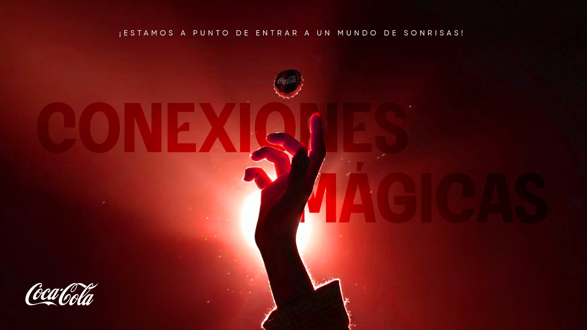

One script and one green-screen take in, four brand-ready formats out, in about 30 minutes of production per video. I directed an AI-assisted pipeline and shaped it around one brand's rules, so every correction made the next video better.
- Series
- 6 videos so far, 10 planned
- Deliverables
- 24 final files
- Role
- Direction, brand rules, review
- Per video
- ~30 min, approx.
A script goes in. Timed motion comes out.
This case shows AI-assisted video animation for a real brand series. Speech recognition turns the recorded voice into timed words, and those words cue the graphics, captions and sound. Below is the idea in one loop, using a real passage from Video 6.
The script drives the motion
Each word gets a timestamp from the recorded voice. Graphics are anchored to those words, so timing comes from the performance rather than from hand-placed keyframes. Click a highlighted word to see what it triggers in Video 6.
A person approves the graphics plan first. The automation handles timing and rendering; the creative decisions stay reviewed.
Inside the workflow
Nine stages, each leaving a real file behind. That is why one note changes one thing: fix a stage and only what follows it re-renders. Select a stage to see its tool, its input and output, and the actual artifact from Video 6.
How the system learned
The first video started from a general method and the client's style guide. Each note below became a measurable rule in the brand file, so later videos started with it applied.
One master, three adaptations
The 9:16 is finished and approved first. The others are recomposed from the same layers, reusing audio, cuts and timing. The presenter is only ever shown at real size or smaller, and safe zones and legal copy are placed per format.
What it takes
Time per video, from a blank project to all four formats. Review waits are excluded.
| Stage | This workflow | After Effects |
|---|---|---|
| 9:16 master | ~25 min | ~5 h |
| 3 adaptations | ~1:30 min each, ~4.5 min total | ~3–4 h total |
All figures are approximate. Workflow times are reconstructed from file timestamps across the series; the After Effects figures are my professional estimate. Building the system during Video 1 is not included.
The series
The 9:16 masters. Click one to play it with sound.
Tools and role
These tools were chosen and combined strategically for each stage of production, all orchestrated through a custom Claude skill. My role was to direct them and shape them around the brand.
Conexiones Mágicas →
